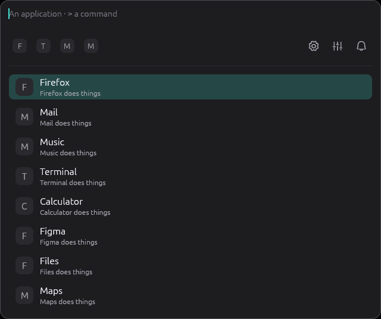
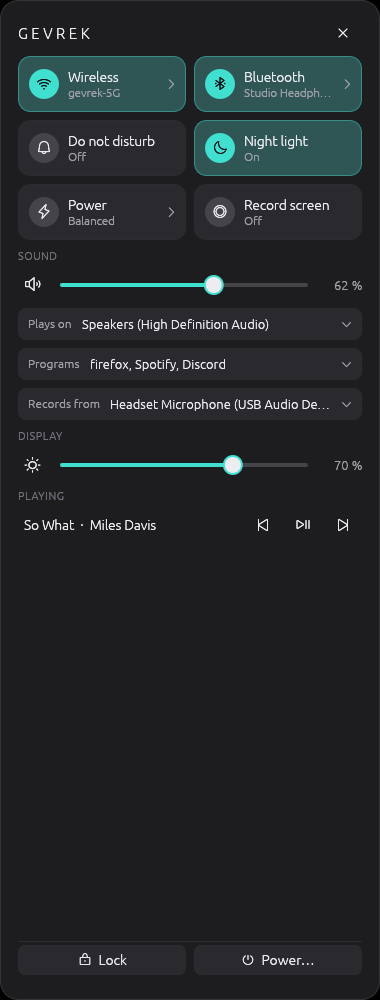
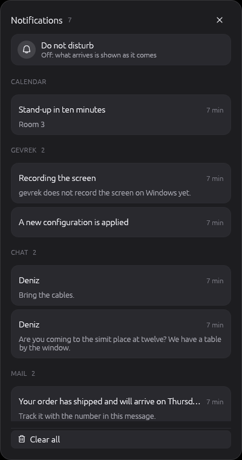
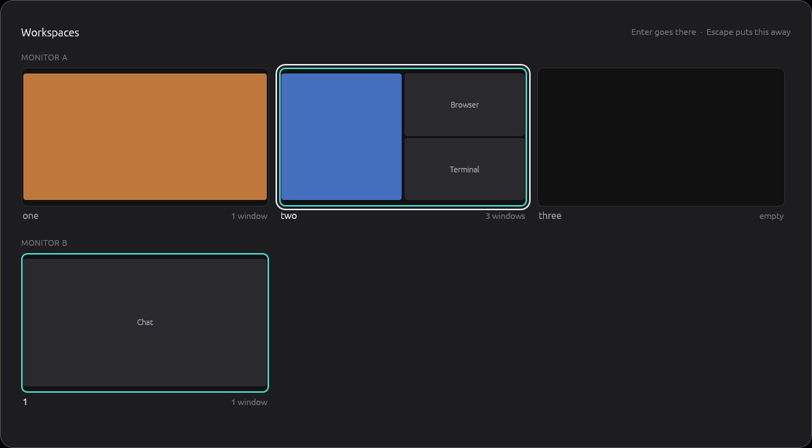
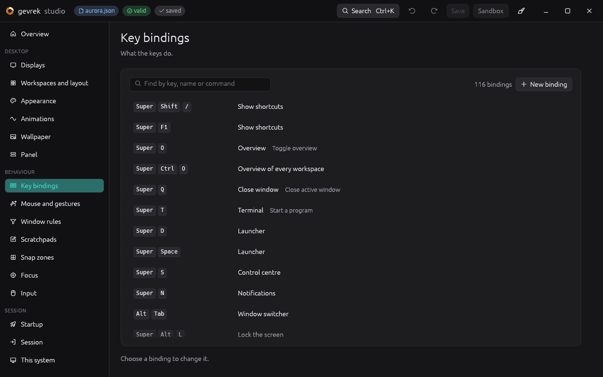
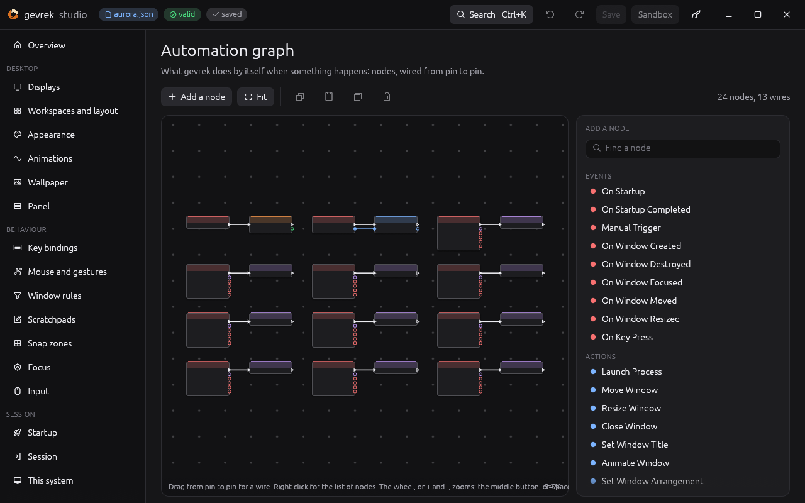
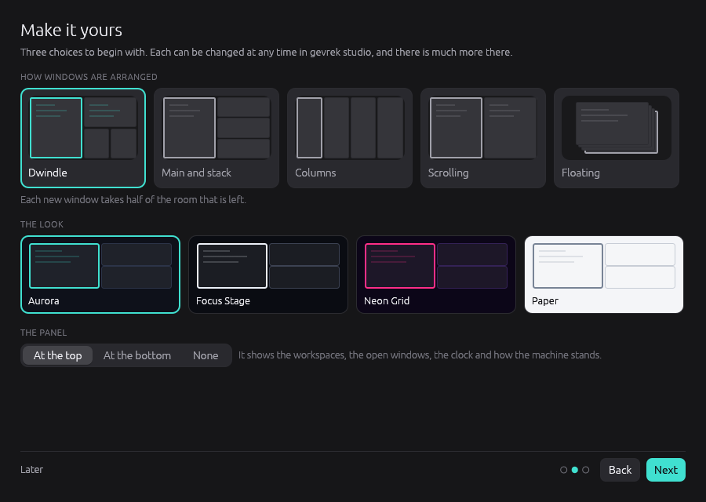
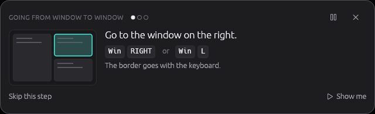

Windows that arrange themselves.
gevrek gives every window its share of the display. None lies over another, and a few keys take you between them. It brings the rest of a desktop with it, and it is the same on Windows and Linux.
You say where. gevrek does the placing.
Open a window and it gets a place; close one and the others take its room. Twelve layouts decide how the room is shared: dwindle, main and stack, columns, a grid, a scrolling strip as long as it has to be, and plain floating when that is what you want.
Workspaces keep things apart, on each display. Windows can share a place as tabs, wait out of sight in a scratchpad, or follow rules that say where a program's windows go. Every one of these has a key, and the pointer and the touchpad can do all of it too.
The rest of a desktop, drawn by the same hand.
A window manager alone leaves you looking for a panel, a launcher and a way to turn the sound down. gevrek's shell has them, in one look, on both systems.

> it finds everything gevrek can do; after a :, what you copied.


Also there: a panel on every display, on-screen displays for volume and brightness, a window switcher and a power menu. On Linux the shell is the lock screen, the wallpaper, screenshots and the clipboard as well.
Nothing has to be written by hand.
gevrek studio has every setting in a form, with a search over all of them. It talks to the gevrek that is running, so what you change is what you see.

Tried before it is kept
A change that could lock you out, such as new keys or no panel, is applied for fifteen seconds. Unless you keep it, the configuration from before comes back by itself.
An automation graph
What gevrek does by itself when something happens, wired from node to node: a window opens, a key is pressed, a workspace is shown.
Looks to start from
Aurora, Focus Stage, Neon Grid, Paper and more. Loading one keeps what is yours: your keyboard, your displays, your own rules.

It teaches itself.
The first time gevrek runs, your windows stay exactly where they are. A welcome asks how you want them arranged, which look you like and where the panel goes, and nothing changes until you say so.
Then a tour, if you want it: short lessons on practice windows of their own, on a workspace of their own. Each step waits until you have done it, with the keys your configuration has for it.


One desktop, two systems.
The part of gevrek that arranges windows knows nothing of the system under it. Each system is a backend, so what is written once works on all of them.
- Windows 10 and 11
- gevrek arranges the windows of the Windows desktop, and its shell stands in for the taskbar. Stop it and every window is put back. The most complete of the two.
- Linux, on Wayland
- gevrek is the compositor itself, built on Smithay, with its own display manager to sign in with. X11 programs run through Xwayland.
- macOS
- Planned. Nothing is written yet.
Programs for the rest of the day.
A desktop wants programs on it. These are by the same hands, each a project of its own, each keyboard-first and drawn with egui like gevrek itself.
- SoyuzA file explorer whose window never stops answering. Every copy and move is a job you can pause.
- gitemA Git client: the graph, your changes, an editor, and its own diff and merge tools.
- PeekA quiet remote desktop client for RDP and VNC, with tabs and a library of connections.
- CorrentYour own media server and player, with a torrent client built in.
- walleBrowse, shortlist, compare and set wallpapers from nine sources.
Build it.
gevrek is at version 0.6 and young. Each release has a setup program for Windows, which then keeps itself up to date, and a .deb and an .rpm for Linux. Or build it from source with a current stable Rust toolchain. gevrek stop all is the way out: it puts every window back.
Windows
git clone https://github.com/ulaas/gevrek
cd gevrek
cargo build --release --bins
cargo build --release -p gevrek-shell
cargo xtask install
gevrek start allLinux
git clone https://github.com/ulaas/gevrek
cd gevrek
cargo build --release -p gevrek-smithay \
-p gevrek -p gevrek-studio -p gevrek-shell --bins
scripts/run-nested.shThe libraries it needs are listed in docs/LINUX.md. The last line runs gevrek as a window inside the session you are in.